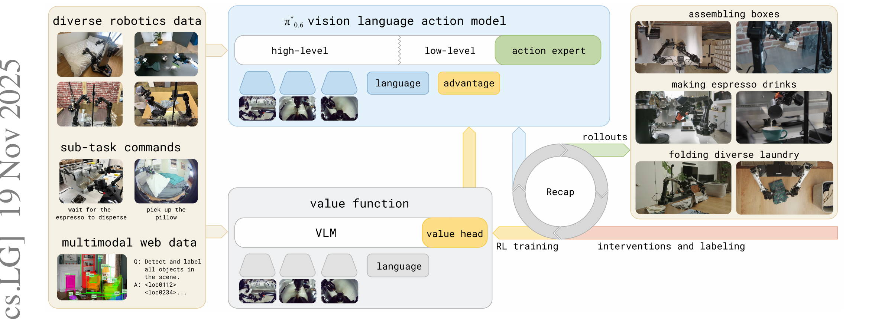
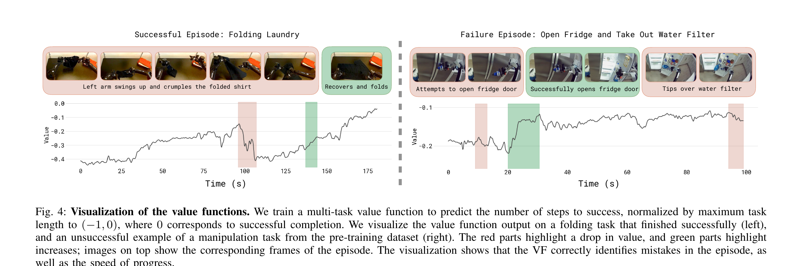
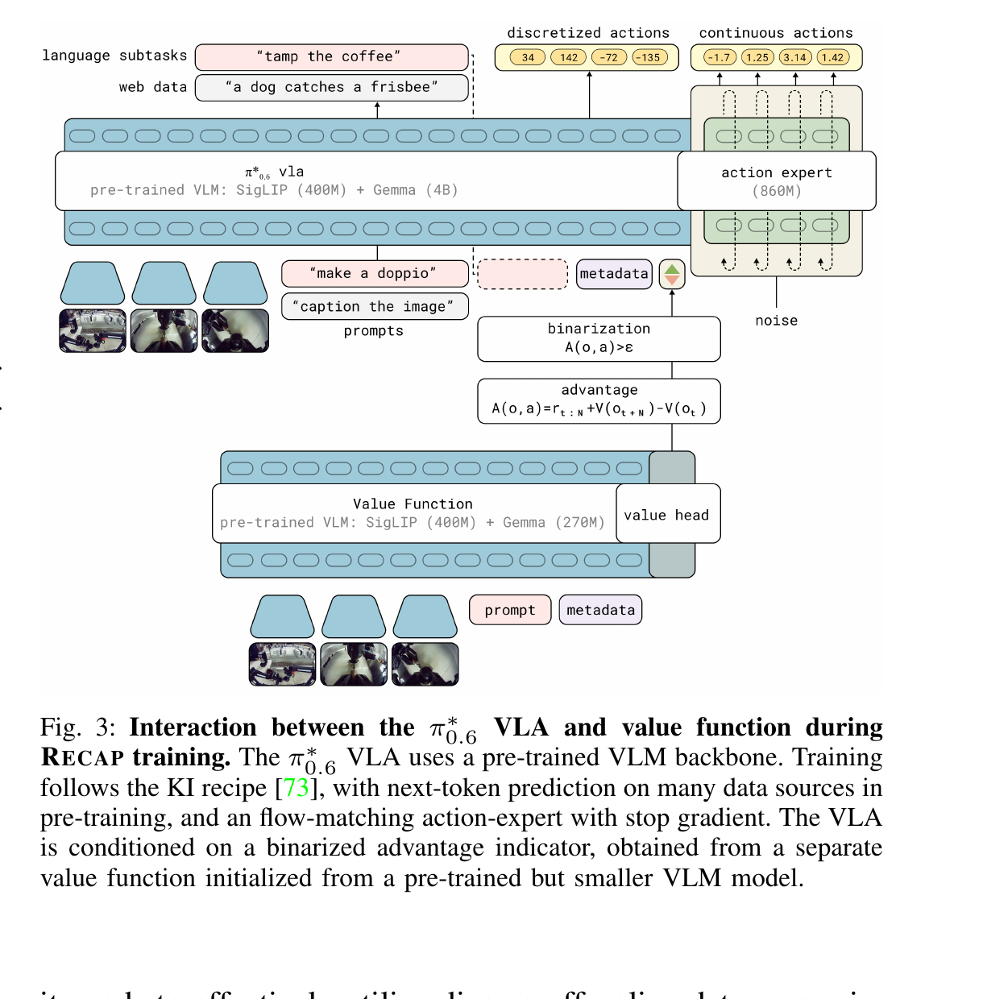
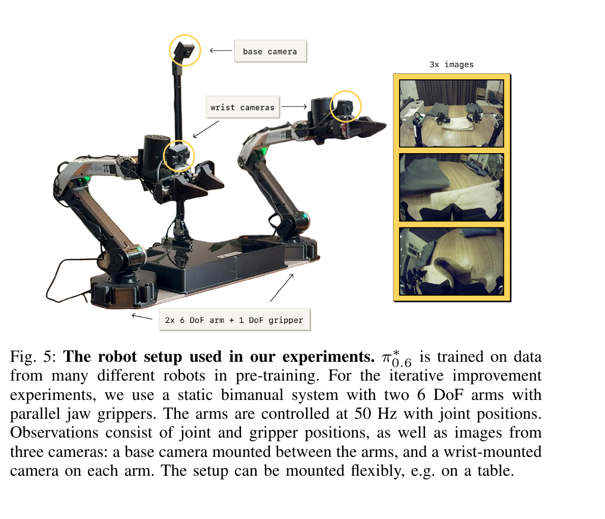
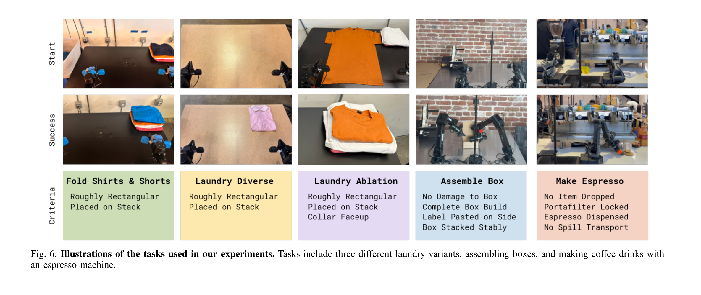
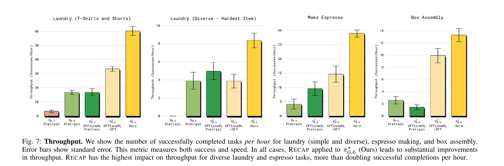
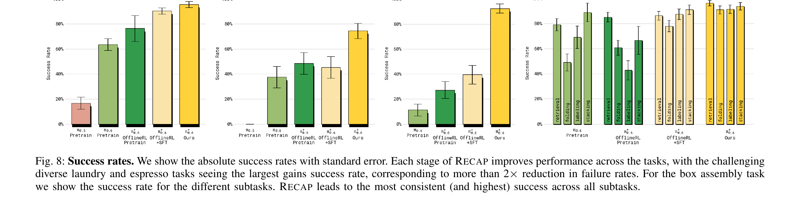
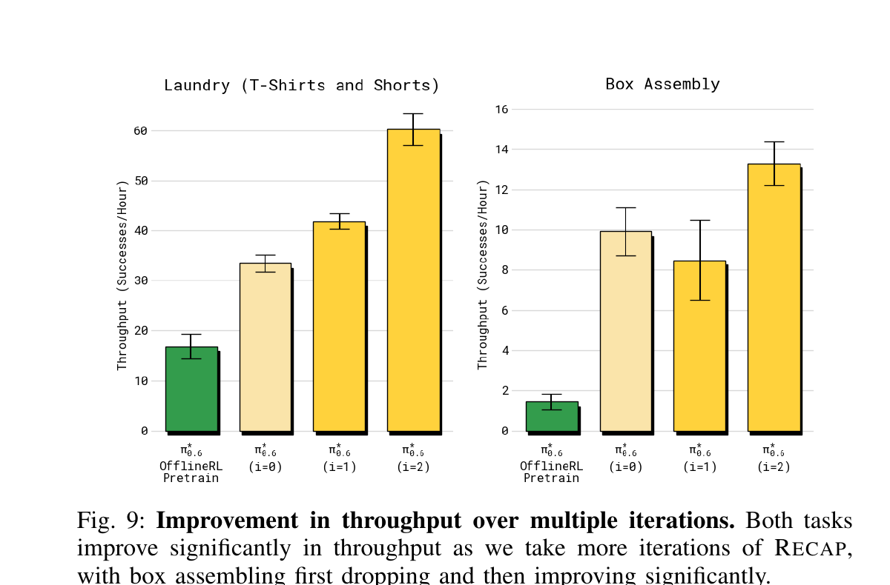
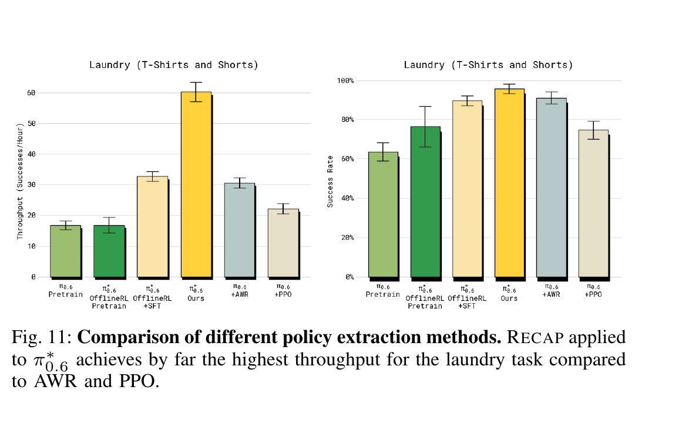
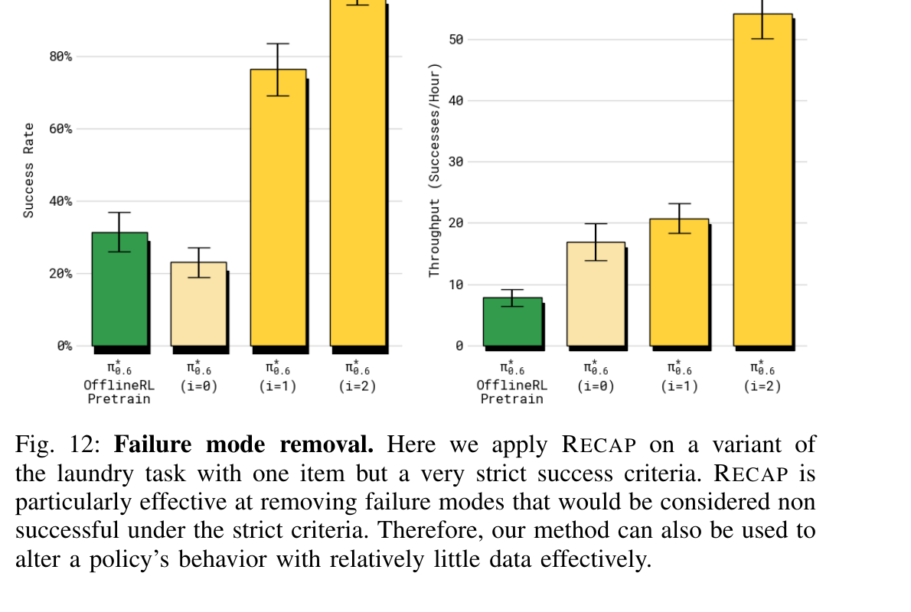

π*₀.₆: a VLA That Learns From Experience
Physical Intelligence · arXiv 2511.14759 · 2025-11-19
π*₀.₆ 不是又一个新架构——它是 π₀.₅ 的"实习医生升级"： π₀.₅ 学会了怎么在新家干活（imitation learning），但不会从自己的失败里改进； π*₀.₆ 加上了"从经验里学"的回路——叫 RECAP （RL with Experience and Corrections via Advantage-conditioned Policies）。
阅读路径：先看 §2 三代关系（π₀.₅ / π₀.₆ / π*₀.₆ 三个名字别搞混）， 再看 §3 RECAP 算法（一张 Fig 1 + 一张 Algorithm 1 总览）， §4–§5 是真正新的方法（distributional VF + 优势条件）， §7–§8 是真实场景结果（13 小时连续做咖啡、两小时折叠新衣服）。
§1 它在 π₀.₅ 之上多解决了什么
π₀.₅ 已经把"在新家 zero-shot 干活"做出来了——但论文里多数任务的成功率仍在 60–80%， 速度也比不过人类。本质问题是：纯模仿学习的天花板就是示教质量， 老师不会的、老师做错的，模型都学不到。 π*₀.₆ 直接面对下一个 open question—— VLA 能不能靠自己 deploy 时的经验持续提升？
用 RECAP 训练的 π*₀.₆ 模型，可以在真实家里折叠各种衣物、 在真实工厂场景里组装纸箱、用专业意式咖啡机做双份 espresso。 最难的任务上，RECAP 让吞吐量翻倍以上，并把失败率大约减半。
展开原文 · Abstract 核心句
"We present a general-purpose method, RL with Experience and Corrections via Advantage-conditioned Policies (RECAP), that provides for RL training of VLAs via advantage conditioning. Our method incorporates heterogeneous data into the self-improvement process, including demonstrations, data from on-policy collection, and expert teleoperated interventions provided during autonomous execution."
LLM 的发展路径是：pre-train（读万卷书）→ SFT（学着回答）→ RLHF（按反馈改进）。 VLA 现在走的是同一条路：π₀（pre-train + flow matching）→ π₀.₅（co-train + 高层推理）→ π*₀.₆（RL from experience + corrections）。 RECAP 在 VLA 里的位置 ≈ RLHF 在 LLM 里的位置——都是把"行动后果"变成可优化的反馈。
§2 三代关系 · π₀.₅ → π₀.₆ → π*₀.₆
读这篇论文最容易混淆的就是三个名字：π₀.₅（旧）、π₀.₆（新基模型）、π*₀.₆（带 RL 的最终模型）。 上一节说了 RECAP 是"怎么学"；这一节先把"谁在学"和"从哪起步"搞清楚—— 后面所有公式才有意义。
2.1 三代差异对照
| 代际 | π₀.₅（2025-04） | π₀.₆（2025-?, model card） | π*₀.₆（本论文） |
| 骨干 VLM | PaliGemma（SigLIP + Gemma 2.6B） | SigLIP 400M + Gemma 3 4B | 同 π₀.₆ |
| Action Expert | ~300M flow matching | 860M flow matching | 同 π₀.₆ |
| 训练范式 | imitation learning（两阶段：discrete → flow） | 同 π₀.₅（更大数据） | + offline RL · advantage conditioning |
| 额外条件 | language + state + images | 同 π₀.₅ | + "Advantage: positive/negative" 文本 token |
| 数据来源 | 异质机器人 + web + 高层 subtask 标注 | + 更多机器人本体 | + autonomous rollouts + human interventions |
| 价值函数 | 无 | 无 | 670M VLM 骨干 + 离散 distributional value head |
| 典型成果 | 新家 zero-shot 干 10–15 min | 更强的基线（细节见 model card） | 13h 连续做 espresso · 工厂组装纸箱 · 折新衣物 2x throughput |
带星号 π* 在论文里专指引入了 advantage conditioning 的版本—— 没星号的 π₀.₆ 只是"更大的 π₀.₅"，不会做 RL。 后面所有方法章节谈的都是 π*₀.₆。
2.2 为什么需要 RL · 模仿学习的天花板
§2.1 列了三代差异——但为什么非要在 π₀.₆ 头上再叠一层 RL？ 这一小节给两个理由，下一章 §3 直接讲怎么做。
| 问题 | imitation learning 的硬伤 |
| compounding error | 训练时只看到"专家轨迹"。一旦 deploy 时漂出训练分布，模型不知道怎么"回到正轨"——错误会沿时间累积（Ross & Bagnell 2011）。 |
| 速度 / 鲁棒性 | 模型最多复现示教质量。示教者本身慢、或经常犹豫，模型就学不到比示教者更快的执行。 |
| 失败模式无法定向修复 | "把 collar 折反了" 这种特定失败，加再多示教也不一定覆盖到。RL 只要用含失败的 rollouts就能精准压制（见 §8.4 Fig 12）。 |
§3 RECAP 算法总览
§2 给出了"需要 RL"的动机。这一节用一张 Fig 1 + 一张 Algorithm 1 把 RECAP 的整套流水线讲完——后面 §4 / §5 只是放大它的两个核心齿轮。
3.1 一张图看懂 RECAP

3.2 三件子任务 · Algorithm 1
论文把 RECAP 切成三个可重复调用的子例程，循环 K 次。 每一次循环就是"跑数据 → 训 VF → 训 policy"——和 actor-critic 套路一样， 但policy 训练用的不是 policy gradient，是 supervised learning + advantage 条件。
Require: 多任务示教数据集 D_demo
# ─── Pre-training 阶段 ───
1: 用 D_demo 训 V_pre # 价值函数预训练（Eq.1）
2: 用 D_demo + V_pre 训 π_pre # 策略预训练（Eq.3）
# ─── 对每个下游任务 ℓ 单独跑 ───
3: 初始化任务阈值 ε_ℓ # 控制"什么算优势 > 0"
4: 用任务示教 D_ℓ 微调 V_ℓ⁰（从 V_pre 开始） # SFT 价值函数
5: 用 D_ℓ + V_ℓ⁰ 微调 π_ℓ⁰（从 π_pre 开始） # SFT 策略
# ─── RECAP 迭代 K 次 ───
6: for k = 1 to K do
7: 用 π_ℓ^(k-1) 在真机上 rollout，加进 D_ℓ # autonomous + interventions
8: 用 D_ℓ 微调 V_ℓ^k # 重新训 VF
9: 用 D_ℓ + V_ℓ^k 微调 π_ℓ^k # 重新训 policy
10: end for第 1 步：拿到 demo 数据
D_demo 来自异质机器人 + web 多模态 + sub-task 标注（和 π₀.₅ 一样）。
第 2 步：先把 V 训出来
独立的 670M VLM + value head。Loss 是 Eq.1 的 cross-entropy on discretized returns。
第 3 步：用 V 训 policy（pre-training 的 π_pre）
Loss 是 Eq.3：log π(a|o,ℓ) + α·log π(a|I,o,ℓ)。I = 1{A(o,a) > ε} 就是把"动作够不够好"压成 0/1。
第 4 步：去真机跑，把 rollouts 加进数据集
自主跑大部分 + 人偶尔介入纠正。介入数据强制标 I=True（人当然是好的）。
第 5 步：循环 7–9 行
实测 K=2（box assembly）就足够；laundry K=1 已接近饱和。每次循环 = 一次"实习 → 总结 → 再实习"。
没有 PPO、没有 REINFORCE、没有 policy gradient。 策略训练的损失始终是监督学习的 NLL——只是把"这个动作好不好"当成额外的 prompt喂进去。 训练时随机出现 positive / negative 两种条件；推理时永远 condition on positive，相当于 classifier-free guidance（CFG）的"开关"。
§4 价值函数 · Value Function
§3 把 RECAP 的整体框架讲完了——但"价值函数"和"优势函数"具体长什么样没说。 VF 是这套流水线里的"裁判"，VF 不准，advantage 就是噪声，policy 越训越糟。 这节回答：用什么 reward？怎么离散化？为什么用 distributional VF 而不是回归一个标量？
4.1 离散化 + 多任务 distributional VF
一句话：每多走一步扣 1 分；成功不罚；失败重罚。 所以 Vπ(o) = "从这里走到成功还要负多少步"，归一化到 (-1, 0]。
论文走 Bellemare 2017 distributional RL 的路线：把回报离散成 B = 201 个 bin， VF 输出每个 bin 的概率，loss 是 cross-entropy。 连续回归一个 scalar 容易被极端值（fail 时的 -Cfail）拖着不收敛； 分布预测对长尾稳定得多，并且天然给出 uncertainty。
- $R^B_t(\tau)$
- "从 $t$ 到轨迹结束的真实回报" 离散到 $B = 201$ 个 bin 的 one-hot 分布——这就是 ground truth
- $p_\phi(V \mid o_t, \ell)$
- VF 网络输出的"V 值在 B 个 bin 上的概率分布"
- $H(\cdot, \cdot)$
- cross-entropy——拉近预测分布和 ground-truth one-hot
- $\mathbb{E}_{\tau\sim\mathcal{D}}$
- Monte Carlo 估计：直接用整条轨迹的真实回报，不做 TD bootstrap
论文承认这不如 off-policy Q-function 优秀，但简单稳定，未来工作可以换。
4.2 VF 学到了什么（Fig 4）

§5 优势条件策略提取
§4 把"裁判"训出来了。下一个问题是：有了 V，怎么把策略变好？ 正常 RL 的答案是 PPO / Q-learning——但 flow matching VLA 没有可计算的 log-likelihood， 那些方法都用不了。RECAP 用的是第三条路：把"动作好不好"当 prompt 的一部分。
5.1 为什么不能直接 PPO / AWR
| 方法 | 用在 flow matching VLA 上的硬伤 |
| PPO / REINFORCE | 需要 log π(a|o)。Flow matching 是 ODE/SDE 形式，没有 closed-form likelihood。论文 Appendix D 给了一个用 single-step diffusion ELBO 的近似（PPO baseline），但实测不稳定且性能差（Fig 11）。 |
| AWR（advantage-weighted regression） | 对样本按 exp(A/β) 加权——负优势的样本权重 ≈ 0，等于扔掉一大半数据。VLA 训练成本极高，扔数据是奢侈。 |
| RECAP（advantage conditioning） | 所有数据都参与 SL 训练，只是多个 binary 文本 token 标"好/坏"。推理时 condition on "好"——等价于 classifier-free guidance 的一种实现。 |
5.2 优势条件的数学
从经典 regularized RL 的闭式解出发，论文证明改进策略 π̂ 可以写成：
- $I = \mathbb{1}\{A^{\pi_\text{ref}}(o, a, \ell) > \varepsilon_\ell\}$
- binary 改进指示符——动作 $a$ 的优势是否超过阈值 $\varepsilon_\ell$
- $\pi_\text{ref}(a \mid I, o, \ell)$
- 多 condition 一个 $I$ 的"打了好坏标签的"参考策略
- $\beta = 1$
- $\hat\pi = \pi_\text{ref}(a \mid I, o, \ell)$——直接 condition on $I=\text{True}$ 就是改进策略
- $\beta > 1$
- 进入 CFG（classifier-free guidance）模式，推理期"放大" advantage 信号
两项都是纯 NLL——一项是无条件的（用作 ref policy），一项是有 advantage 条件的（用作改进 policy）。 实践上不调 α，而是30% 概率随机丢掉 I 这个 token——这就是 CFG 风格的 dropout，等价 α = 1。
5.3 工程实现 · "Advantage: positive" prompt
把 advantage 条件做成额外的文本 token，插在 prompt 末尾、动作之前：
... <language> ... <state> ... <subtask> ... Advantage: positive [actions]这样既不动模型架构，也不动 tokenizer——VLM 见过的"positive / negative" 文本足够把语义带过来。 训练时 30% dropout（无 advantage token），推理时永远填 "positive"。
Diffusion 图像生成里 CFG 的做法是：训练时随机丢掉 prompt（一定概率走 unconditional）， 推理时用 ε(x|prompt) - ε(x|∅) 的差去"放大 prompt 信号"。 RECAP 把"prompt" 换成"advantage 是 positive"——一模一样的把戏，只是把"条件"从描述换成奖励标签。
§6 模型架构
§3–§5 讲完了"训练时怎么用 VF + advantage"。这节回答"VLA 和 VF 这两个模型在物理上长什么样、怎么联动"——只看 Fig 3 一张图就够。
6.1 VLA + VF 联动（Fig 3）

6.2 π₀.₆ 相比 π₀.₅ 改了什么
| 组件 | π₀.₅ | π₀.₆ |
| VLM 骨干 | PaliGemma（SigLIP 400M + Gemma 2.6B） | SigLIP 400M + Gemma 3 4B（model card） |
| Action Expert | ~300M flow matching | 860M（约 3×） |
| 训练范式 | discrete pre-train → flow post-train（KI） | 同 KI |
| Pre-training 数据 | 多机器人 + web + HL subtask | + 更多机器人本体 |
| 新增（仅 π*₀.₆） | — | + advantage 文本 token + 独立 VF 模型 |
§7 任务 & 机器人
§3–§6 都是方法论。从这节开始进入"在哪里、做什么"—— 选了三类真实世界长程任务来验证 RECAP 是否真的能 work，而不是只在 sim 里好看。
7.1 双臂平台（Fig 5）

7.2 三类任务（Fig 6）

| 任务 | 成功标准 | 难点 |
| Fold T-shirts & Shorts | 大致矩形 + 叠到指定堆位 | π₀ 时代就在做的基线任务，速度是关键 |
| Laundry Diverse（11 类） | 同上，但物品种类多（毛衣、袜子、内衣...） | 形变物体多样性大，最难的是 button-up shirt |
| Laundry Ablation | 橙色 T 恤 + collar 必须朝上 | 故意放在容易出"collar 朝下" 失败模式的初始姿态 |
| Assemble Box | 从纸板片 → 组装 → 贴 label → 入箱 | 真实工厂 deployment；需要受力操作 + 多步骤协调 |
| Make Espresso (Cafe) | 取 portafilter → 磨豆 → 压粉 → 锁机 → 萃取 → 端送，<200s | 商业咖啡机；液体 + 受力 + 长程 |
§8 实验结果
§7 描述了"在哪做"。这节用四张图回答四个具体问题： RECAP 比 baseline 强多少？多次迭代有没有持续提升？比 AWR / PPO 强多少？能不能定向修掉某个失败模式？
8.1 吞吐量 + 成功率（Fig 7 / Fig 8）


| 方法（自左向右） | 含义 |
| π₀.₅ Pretrain | 旧基线 |
| π₀.₆ Pretrain | 更大基模型，不 用 RECAP |
| π*₀.₆ OfflineRL Pretrain | π₀.₆ + advantage conditioning，但只用 demo 数据 |
| π*₀.₆ OfflineRL + SFT | + 任务示教 SFT 微调 |
| π*₀.₆ Ours | + RECAP 迭代（autonomous + interventions）= 完整方法 |
8.2 迭代式提升（Fig 9 / Fig 10）

8.3 vs AWR / PPO（Fig 11）

8.4 移除特定失败模式（Fig 12）

- Espresso · 13 小时不间断：在咖啡店连续做 espresso 13h，无人工干预。
- Laundry · 2 小时折新衣：在新家折叠未见过的衣服 2h，零中断。
- Box assembly · 工厂 deployment：组装的纸箱用于真实工厂打包。
§9 收获 · 局限 · 与 π₀.₅ 的对照
把整篇论文压缩成一张总结卡片——你应该带走什么、它没解决什么、它和 π₀.₅ 在开源生态上的关系。
9.1 三条 takeaway
过去 RL on VLA 的难点是没有可计算的 log π。RECAP 把"这个动作好不好" 从 loss 里挪到 prompt 里，绕过 likelihood，用纯 SL 完成 RL 改进。 这条思路对所有 likelihood-free 的生成式模型（diffusion / flow / EBM）都有借鉴意义。
最终训练数据 = 多机器人示教 + autonomous rollouts + human interventions。 其中 interventions 是少量 + 高价值——只在模型犯错时介入，几百条就够大幅改善。 这比"先采几千条新数据再 SFT" 经济得多。
把回报离散成 201 bin、用 cross-entropy 训——比单 scalar 回归稳定。 Fig 4 显示 VF 学到的不只是终态，还有子任务进度，这是 advantage 能 work 的物理依据。
9.2 局限（论文 §VII 自己承认）
| 不自主 | 仍依赖人做 reward labeling、interventions、episode resets。完全 hands-off 还做不到。 |
| 探索很弱 | 只靠 policy stochasticity 和 human interventions 做"探索"。如果初始策略完全偏离，RECAP 救不回来。 |
| Offline 风格的 RL loop | 不是 fully online——仍是"采一批 → 训一遍 → 再采"。online 版本是 future work。 |
| 只在一台双臂上验证迭代提升 | pre-training 跨多本体；但 RECAP 迭代实验全在静态双臂上完成，跨本体迭代未做。 |
9.3 对照 π₀.₅ · openpi 开源什么
π₀.₅ 在 openpi
里以 Pi0Config(pi05=True) 开放了架构。
π*₀.₆ / RECAP 截至本文发布未开源——只有 blog post + 论文。
可以预期跟随 π₀.₅ 的节奏，架构（advantage token 的位置 + VF 模型骨架）会进 openpi，
但训练 recipe（VF 训练、advantage 阈值、intervention 数据 pipeline）大概率不会公开。
| 组件 | π₀.₅ 状态 | π*₀.₆ 预期 | 说明 |
| VLA 架构（含 adv token） | 开源（pi05 flag） | 可能开 | 只是多一个 prompt token |
| Action Expert 860M 权重 | 无（仅 π₀ 老权重） | 几乎不会 | 商业核心 |
| VF 模型代码 | — | 可能开骨架 | distributional head 标准做法 |
| VF 权重 | — | 几乎不会 | 同上 |
| RECAP 训练 loop | — | 几乎不会 | 含真机数据 pipeline |
| 真机 rollouts / interventions 数据 | — | 几乎不会 | 商业资产 |
📄 原文：pi0.6.pdf · 🌐 Blog：pistar06 · 🔗 前作：π₀.₅ Open-World · π₀ VLA